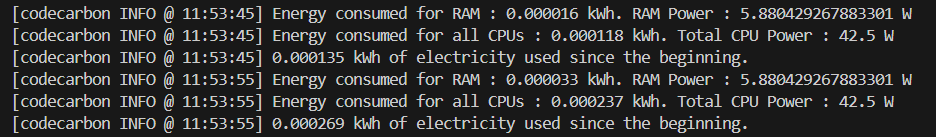

Méthodologie
Méthode de calcul
Les émissions de dioxyde de carbone (CO₂), exprimées en kilogrammes d'équivalents CO₂ [CO₂eq], résultent de deux facteurs principaux :
- C = L'intensité carbone de l'électricité consommée pour le calcul, quantifiée en grammes de CO₂ émis par kilowattheure.
- E = L'énergie consommée par l'infrastructure de calcul, quantifiée en kilowattheures.
Les émissions de dioxyde de carbone (CO₂eq) peuvent ainsi être calculées comme suit : C * E. La source de notre intensité carbone est un élément clé de cette analyse.
Intensité Carbone
L'intensité carbone de l'électricité consommée est calculée comme une moyenne pondérée des émissions des différentes sources d'énergie utilisées pour produire l'électricité, incluant les énergies fossiles et renouvelables.
Les énergies fossiles telles que le charbon, le pétrole et le gaz naturel ont des intensités carbone spécifiques. Les énergies renouvelables ou à faibles émissions incluent l'énergie solaire, l'hydroélectricité, la biomasse, la géothermie, etc.
Provenance des chiffres
Lorsque disponible, CodeCarbon utilise l'intensité carbone globale de l'électricité par fournisseur cloud (source) ou par pays (source).
Si ces données ne sont pas disponibles, mais que le mix énergétique du pays l'est, l'intensité carbone de l'électricité est calculée à l'aide du tableau suivant
Sources : IEA pour les énergies fossiles et Our World in Data pour les énergies renouvelables.
Par exemple, si le mix énergétique d'un réseau est composé de 25 % de charbon, 35 % de pétrole, 26 % de gaz naturel et 14 % de nucléaire :
Intensité carbone nette = (0.25 * 995) + (0.35 * 816) + (0.26 * 743) + (0.14 * 29) = 731.59 kgCO₂/kWh
Depuis peu, Our World in Data fournit l'intensité carbone globale de l'électricité par pays (source). Lorsqu'aucune donnée récente n'est disponible, la donnée de l'année précédente est utilisée.
Si aucune donnée spécifique n'est disponible, une moyenne mondiale de 475 gCO₂eq/kWh est appliquée (source).
Surveillance de votre machine 💻
CodeCarbon permet le suivi en deux modes en analysant un bout de code isolé ou en traquant la consommation totale de la machine.
Le suivi de la machine est simple il suffit de lancer la commande :
codecarbon monitor
Nous obtenons le résultat suivant :
Ce package permet de suivre vos émissions indépendamment de votre code.
Partie de POUDROUX
Bli bla bla